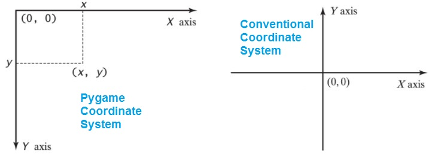

Unit 4: Programming with Python
Activity 3: Using Modules
Importing Modules
The Math Module
During the Computer Science Circles tutorials, you used the math module to add extra functionality to your programs. The math module provides functions such as math.sqrt(x) for calculating square roots, and constants such as math.pi. Other interesting math functions are:
- math.gcd(a, b)
- returns the greatest common divisor (also called the greatest common factor) of the integers a and b.
- math.ceil(x)
- returns the ceiling of x, the smallest integer greater than or equal to x
- math.floor(x)
- returns the floor of x, the largest integer less than or equal to x
A full list of the functions provided by the math module can be found here. Remember that in order to use these functions or constants, you must use the import math command at the start of your code!
Recall: other math operators that do not require the math module, but are still very useful, are:
- power operator a ** b
- computes ab (a multiplied by itself b times). For example, 2 ** 3 produces 8 (which is 2×2×2).
- integer division operator a // b
- computes the "quotient" of a divided by b and ignores the remainder. For example, 14 // 3 produces 4.
- modulus operator a % b
- computes the remainder when a is divided by b. For example, 14 % 3 produces 2.
When using any programming language to evaluate mathematical expressions, don't forget your order of operations!
The Random Module
Random numbers are often used to add reality to program. Games depend on random numbers to generate realistic programs. Python provides a random module to facilitate the create of random numbers. To create random numbers you will have use the import random command at the beginning of your program.
To create a random number you will first have to initialize the random number generator by using the random.seed() method. Without 'seeding' the generator the random numbers will be predictable.
To obtain random numbers, there are a few different options:
- random.randint(a,b)
- returns a random integer between the values a and b, inclusive. For example, random.randint(1,10) will return a random number between 1 and 10.
- random.random()
- returns a random number between 0 and 1
The Pygame Package
|
Pygame is an open-source library that facilitates the creation of games and other multimedia applications. The Pygame package contains a number of modules that we will use in activities in this course. The pygame package has already been installed on the school systems. |
|
|---|

To install pygame on your personal computer follow these steps (this is assuming that Eclipse, Python & the PyDev plug-in are already installed!)
- Right-click on your eclipse shortcut and select Run as administrator
- In Eclipse, select Window ... Preferences from the top menu
- Navigate to PyDev -> Interpreters -> Python Interpreter
- Click the button Install/Uninstall with pip
- Type the command: install pygame
Graphics and Coordinate Systems
|
 |
When drawing graphics on the screen, it's important to understand the coordinate system being used. The functions describe below use the notation (left, top) to indicate the position of a shape. This is due to the location of Pygame's origin point Pygame's origin point is at the upper left corner, unlike the Conventional Coordinate System, which defines the origin point in the center. This convention is standard in most computer graphics systems. |
|---|
Below is a list of important functions provided by the pygame library.
- pygame.init()
- initializes pygame modules. Should be called at the start of the program.
- display.set_mode((WIDTH, HEIGHT))
- Creates a display Surface with the resolution provided. Notice the double parentheses; the resolution is a tuple in pygame, similar to an ordered pair (x, y) in math class
- Keep the Surface that this function returns in a variable; you will use it to draw graphics on the screen!
- display.flip() or display.update()
- Updates the contents of the display, so the user can see the graphics on the screen. The difference between the two functions is that flip() updates the entire display, while update() can optionally be passed a rectangular area that needs to be updated, so the rest of the screen is untouched.
- Surface.fill(Color(name))
- Covers the entire surface with the color. If this is a background, this should be called BEFORE any draw commands
- draw.rect(Surface, Color(name), Rect(left, top, width, height))
- Draws a filled rectangle on the Surface provided. (left, top) will be the location of the upper left corner of the shape
- draw.circle(Surface, Color(name), (left, top), radius)
- Draws a circle with center and radius indicated, on the Surface provided
- draw.ellipse(Surface, Color(name), Rect(left, top, width, height))
- Draws a filled ellipse inscribed inside a rectangle on the Surface provided
- draw.polygon(Surface, Color(name), [pointList])
- Draws a polygon with vertices specified in pointList, on the Surface provided
- draw.line(Surface, Color(name), (start_left, start_top), (end_left, end_top))
- Draws a line between the two point give on the Surface provided
- time.Clock()
- Creates a Clock to keep track of time
- Keep the Clock that this function returns in a variable; you will use it to control the speed of your animation!
- Clock.tick(FPS)
- Delays the program to achieve the specified frame rate (frames per second - FPS)
The program below demonstrates the use of most of these methods to draw a simple picture. Note the use of the import statements at the top; this allows us to access methods in the draw and display modules without needed to reference the pygame package first.
In order for the user to see the image, we end the program with a prompt for the user and the expectation of input. We don't need to save the input, but this will ensure that our pygame window remains visible until the user ends the program. However, you will notice that they window is unresponsive; we will fix this in future activities. Try running this code in Eclipse.
'''
# NAME OF AUTHOR: Mr. Kwai
# NAME OF THE PROGRAM: house.py
# DATE OF CREATION: April 2023
# PURPOSE OF PROGRAM: Draw a house using PyGame
'''
import pygame
from pygame import Color, Rect
from pygame import draw
from pygame import display
SCREEN_SIZE = (500, 500)
# initialize pygame modules
pygame.init()
# get a surface for graphics display
gameDisplay = display.set_mode(SCREEN_SIZE)
# background - color of the sky
gameDisplay.fill(Color('lightblue'))
# draw a house with a roof
draw.rect(gameDisplay, Color('brown'), Rect(100, 200, 300, 200))
draw.polygon(gameDisplay, Color('black'), [(100, 200), (400, 200), (250, 50)])
# draw green grass
draw.rect(gameDisplay, Color('green'), Rect(0, 400, 500, 100))
# draw a sun
draw.circle(gameDisplay, Color('yellow'), (50, 50), 50)
# show the graphics on the screen
display.flip()
# Main game loop
running = True
while running:
for event in pygame.event.get():
if event.type == pygame.QUIT:
running = False
# Quit Pygame
pygame.quit()
Evidence of Learning
 Programming Exercises
Programming Exercises
Save the following programs in the activity3 package of your Unit 4 Python Project.
You must complete an IPO chart for at least TWO of the programs below. Use the Activity 3 evidence card on Hapara for your IPO charts.
- Create a program that will accept the two legs of a right-angle triangle, a and b, and display the length of the hypotenuse, c. Remember to use prompts for the input and labels for the output. Use the formula a2 + b2 = c2 to calculate your answer. Name the program Q1Pythagoras
- Create a program that accepts 2 numbers from the user. Your program will output a random number between the range given by the user. Name the program Q2RandomRange
- Create a program that will ask the user an addition question. The program will generate two random numbers between 1 and 100, and display them as an addition question with appropriate prompts. Name the program Q3Addition
- Using the pygame library, draw a simple picture. It can be anything you like, but you must use at least 2 different types of shapes and 3 different colors. Name the program Q4Picture
Commit and push your code to your GitHub repository EVERY DAY, and submit the Activity 3 evidence card when you are done. It is YOUR responsibility to ensure that your code is on Github!